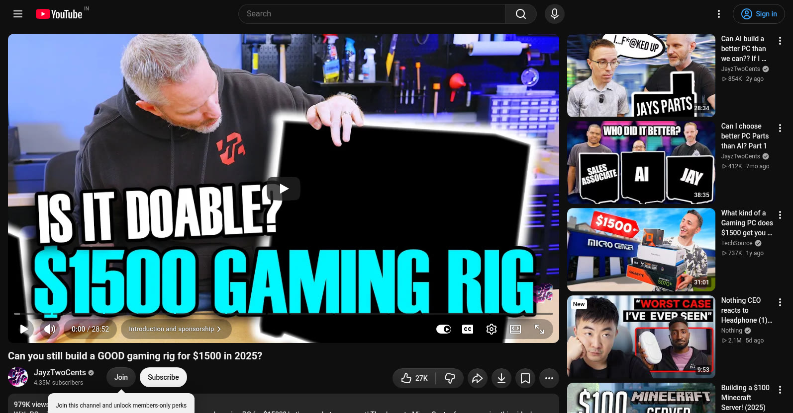
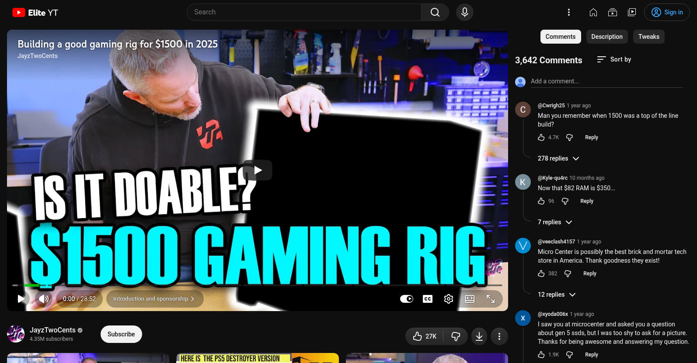
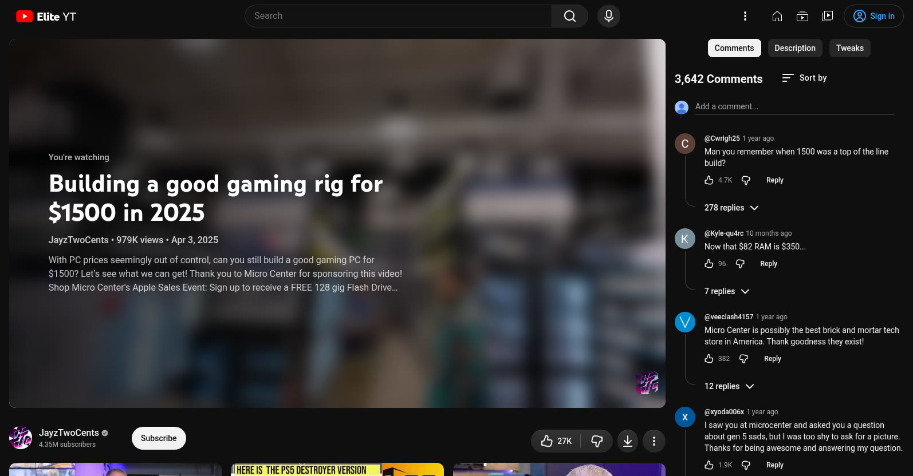
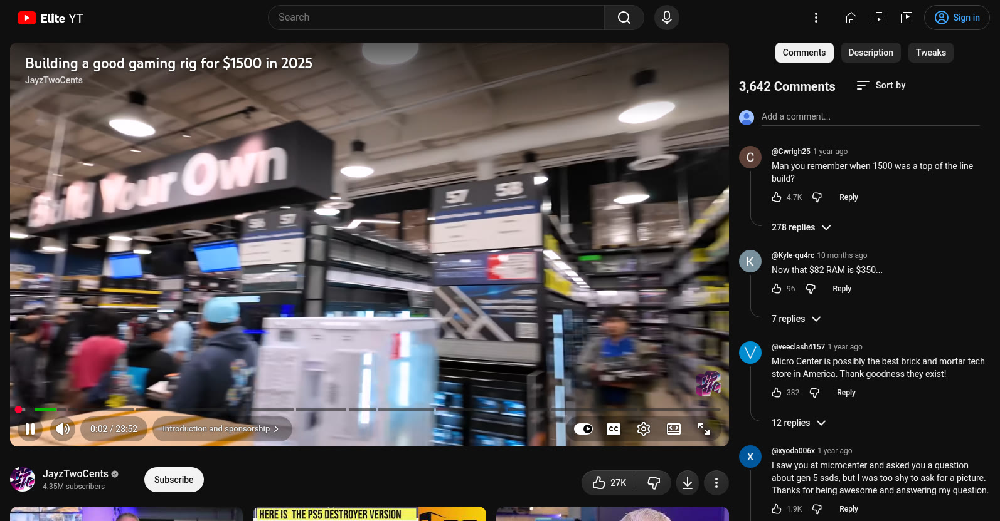
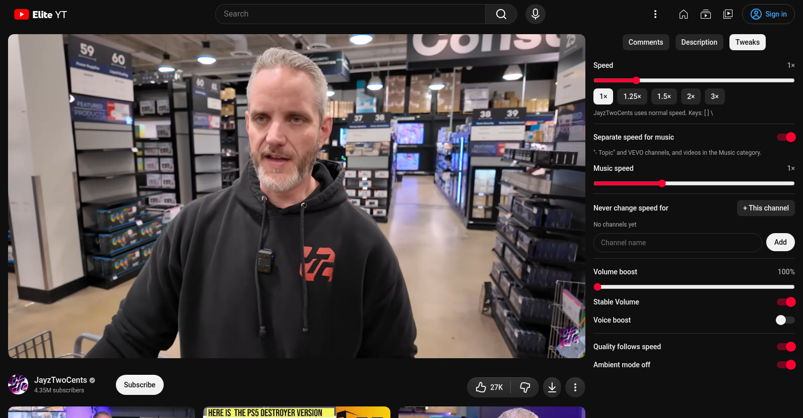
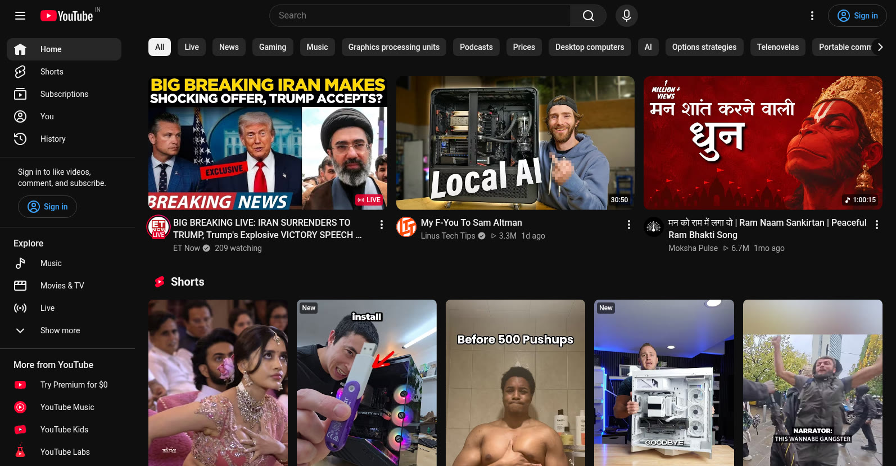
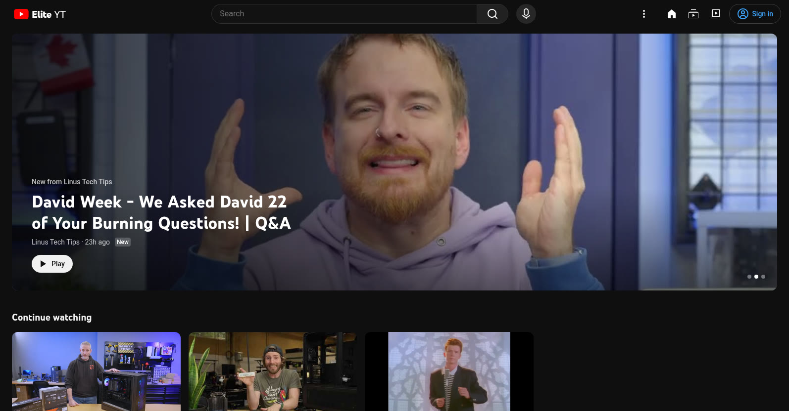
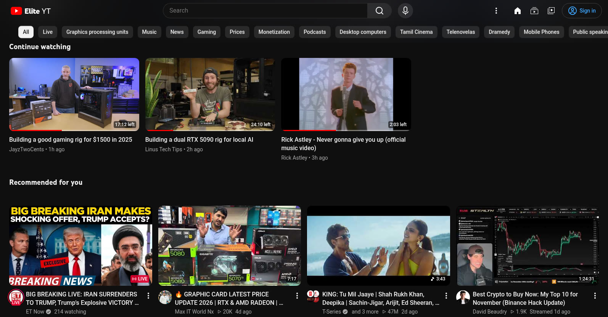
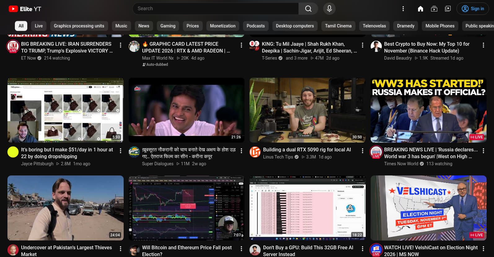
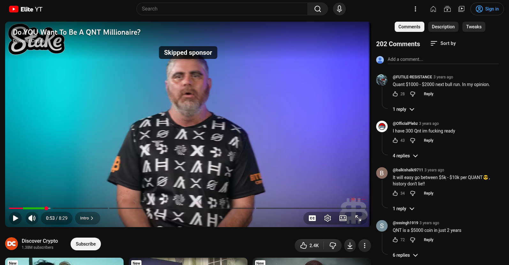

YouTube, without the noise.
EliteYT is a browser extension built to elevate your YouTube experience: a calmer home, comments beside the player, a pause screen that tells you what you're watching, and SponsorBlock, DeArrow and Return YouTube Dislike built in.
Brought to you by Dronzer Studios, creators of Thallium 81 & hardware infrastructure.
The video stays in view.
Stock YouTube puts the title, channel and seven buttons under the video and fills the sidebar with thumbnails, so reading comments means scrolling the video away. Drag the slider to compare.


YOUTUBEELITEYTPause, and know what you're watching.
The title moved out of the sidebar and onto the video: it shows with the controls on hover, and pausing blurs the frame and shows the title, channel, views, date and description, like a streaming app.



A home that feels calm.
Netflix-style rows in YouTube's own design language. The left sidebar is gone; Home, Subscriptions and You sit next to your avatar, and the filter chips only appear once you scroll.


YOUTUBEELITEYT

SponsorBlock, DeArrow, Return YouTube Dislike.
Three community projects, wired in directly. SponsorBlock and DeArrow are asked by a 4-character hash prefix of the video ID, so they never learn exactly what you watch; Return YouTube Dislike needs the full ID.

Easy on your battery.
Watching fast doesn't need 1080p. While the laptop is unplugged, EliteYT lowers the quality as the speed rises and skips 60 fps streams.
speed ≥ 1.75× → 720p
below 1.75× → 1080p
60 fps → 30 fps
Ambient mode → off
Speed keys: [ slower, ] faster, \ reset. Speeds are remembered per channel; music channels keep their own.
Load it in Chrome or Helium.
- Download or clone the repository:
git clone https://github.com/Dronzer-Studios/eliteyt - Open
chrome://extensionsand turn on Developer mode. - Click Load unpacked and pick the repository folder.
- Open YouTube. Settings live in the toolbar popup; the full page has the layout editor.